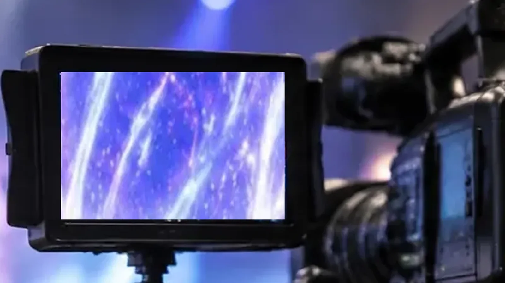

5 系統の入力
SDI・HDMI・DVI・VGA・ビデオ。入力切替ボタンで選びます。
LOTUS JOURNAL / EQUIPMENT
客席が見る大きな画面とは別に、現場の人が見る小さな画面があります。
映像が正しく来ているかを、その場で確かめるためのものです。

SDI・HDMI・DVI・VGA・ビデオ。入力切替ボタンで選びます。
IPS パネル。内蔵スピーカーは R のみです。
受けた SDI を、そのまま後段へ送れます。
01 / WHY SMALL
LCD1015S は、カメラや映像卓の近くに置く 10.1 型の確認用モニターです。SDI は 3G の Level A まで。受けた SDI 信号をそのまま SDI 出力から後段へ中継できるので、途中に挟んでも配線の流れを切りません。
電源は DC7〜24V で、付属の AC アダプターは本機専用です。使用温度は 0〜50℃。
02 / BUTTONS
手順はこうです。付属の AC アダプターをつなぎ、送り元を対応する入力へつなぎ(SDI は BNC ケーブル)、入力切替ボタンで使う入力を選びます。16:9 の素材は表示比率を合わせ、ズームや反転を解除します。後段へ送るなら、後段の画面でも表示と音声を確かめます。
ボタンが反応しないときは、メニューボタンを 6 秒以上長押しするキーロックがかかっていることがあります。故障と決める前に確かめます。
LCD1015S のページを見る ↗03 / NOT INCLUDED
メーカーの同梱品は、HDMI・VGA・音声ビデオの各ケーブル、リモコン、AC アダプター、取扱説明書です。SDI に使う BNC ケーブルと DVI ケーブルは、使う構成に合わせて別に手配します。
煙・異臭・異音が出たら使用を止め、AC アダプターとケーブルを抜きます。電源断・再起動・ボタンの反応が鈍い個体は、新たに本番へ使いません。結露があるときは、なくなるまで電源を入れません。
AT THE DESK
本文の数値・定義は規格やメーカーの公表値をもとにしています。場面の描写は当サイトの提案例で、特定案件の実績紹介ではありません。